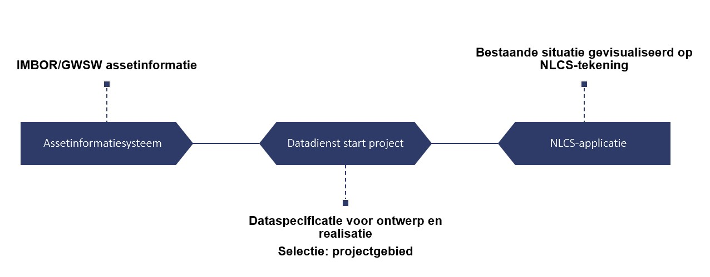
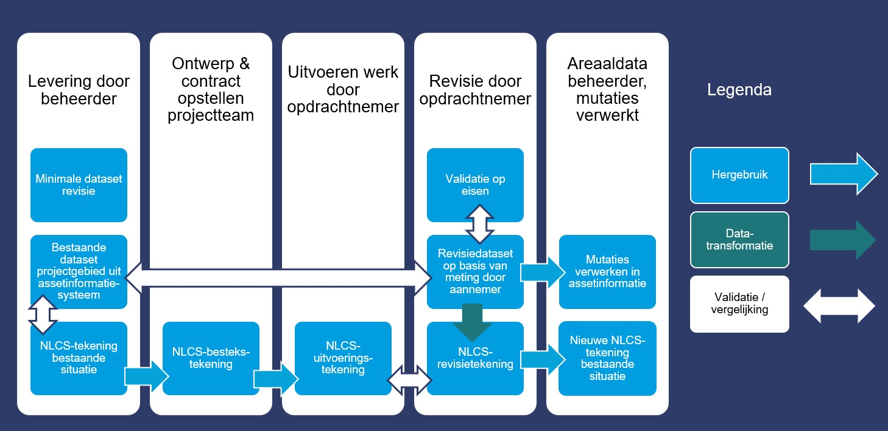
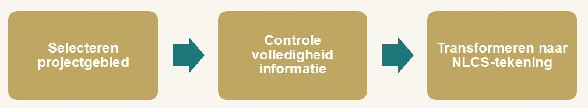
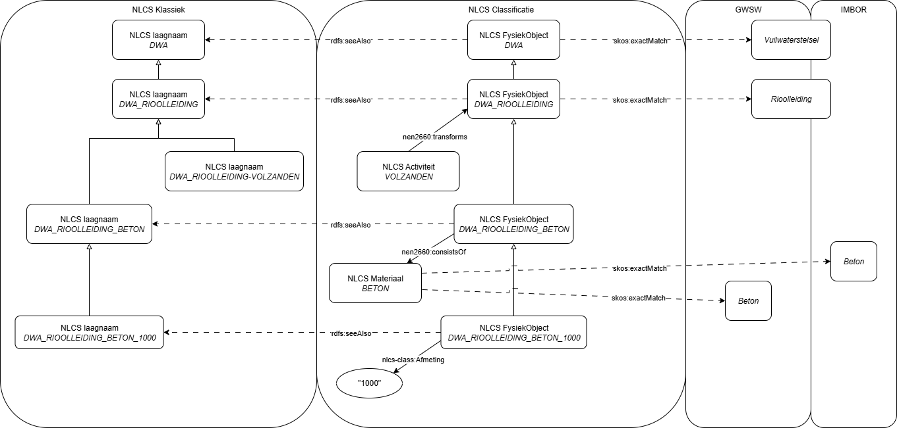
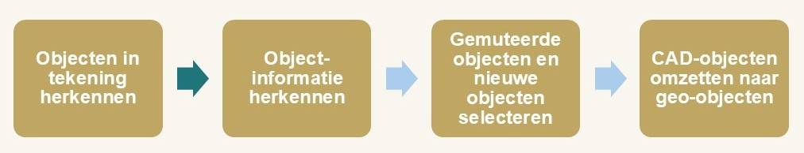

Dit document beschrijft de use case van gemeente Utrecht voor het uitwisselen van rioleringsinformatie tussen de beheerder en een projectteam (ingenieursbureau, aannemer) in het kader van het DOOR-programma
Inleiding
De DOOR-gemeenten en CROW hebben de handen ineengeslagen om voor de sector assetmanagement te komen tot een gemeenschappelijke informatiebasis, zodat assetmanagers en hun (keten)partners in de openbare ruimte en infrastructuur in 2030 over een samenhangend stelsel objectstandaarden in de leefomgeving om de data over hun beheerde assets efficiënt op orde te houden en uit te wisselen. Dit willen zij bereiken door middel van usecases, die door de DOOR-gemeenten worden aangeleverd. Gemeente Utrecht is de tweede gemeente waar een usecase wordt uitgevoerd voor de revisieverwerking.
De usecases zijn erop gericht de informatiebehoefte, die in de praktijk leeft, scherp te krijgen om inzicht te krijgen in de benodigde aanpassingen aan informatiestandaarden zoals IMBOR, GWSW en NLCS of onderlinge verbindingen die tussen deze standaarden moeten worden gemaakt, om informatie beter te kunnen uitwisselen in een keten van partijen die werken met de verschillende standaarden. Hiervoor zijn bij gemeente Utrecht vijf workshops gehouden. Tijdens deze workshops is vanuit de maatschappelijke opgave het stakeholderveld geïnventariseerd, het huidige en gewenste revisieproces met daarbij gewenste informatiebehoefte in beeld gebracht. Met deze workshopopbrengsten is een experimenteeromgeving ingericht waar door middel van een prototype de uitwisseling van data en informatie is beproefd.

Figuur 1 Automatisering levering beheerinformatie voor ontwerp
Conclusie 1. Het is wenselijk om te kunnen controleren of er voldoende informatie beschikbaar is over de assets om te kunnen ontwerpen en realiseren. IMBOR beschrijft welke informatie kán worden vastgelegd, maar stelt bijna niets verplicht. Er is daarom een aanvulling gewenst: het vaststellen van de minimale beheerinformatie die geleverd moet worden aan een project.
Aanbeveling Utrecht: Controleer voor elk project of alle gewenste informatie over de assets beschikbaar is. Dit kan worden geautomatiseerd omdat de data beschikaar is via het centrale assetinformatiesysteem. Werk hiervoor samen met de afdeling stadingenieurs, die de datasets en tekeningen als eerste verwerken in een bestekstekening. Zij weten ook welke informatie nodig is om een nieuwe situatie te kunnen ontwerpen of onderhoudswerk te kunnen uitwerken tot een bestekstekening.
Aanbeveling DOOR-programma: Stel landelijk vast welke informatie over de bestaande situatie nodig is voor het maken van een ontwerp. Maak hiervan een "Minimale dataset assetinformatie voor ontwerp en realisatie" uitgedrukt in IMBOR/GWSW.
Conclusie 2. Het is wenselijk om een selectie van de beheerinformatie te kunnen leveren vanuit een centraal assetinformatiesysteem op basis van de grenzen van het projectgebied.
Conclusie 3. Het is wenselijk om ook een NLCS-tekening van de bestaande situatie te leveren aan het project, omdat daar detailinformatie op staat en functionaliteit in zit die niet in de assetinformatie met 3D-georepresentatie zit, zoals maatvoeringspijlen of specifieke meetpunten met maten die niet in het assetinformatiesysteem staan. Voor rioleringen zijn dat bijvoorbeeld de huisaansluitingen, waarbij de lengtemetrering langs de hoofdbuis op revisietekeningen wordt gezet.
Aanbevelingen Utrecht voor korte termijn
Automatiseer de levering van de bestaande situatie vanuit het centrale assetinformatiesysteem, zodat projecten ondersteund worden bij het opstarten. Dit zou kunnen met een export vanuit het assetinformatiesysteem naar een open GIS-bestand die gebruik maakt van het alignment tussen NLCS en IMBOR, zoals in dit experiment is voorgedaan. De gebruiker moet een projectgebied kunnen selecteren en downloaden. Onderzoek welk geo-uitwisselformaat ingelezen kan worden door je huidige NLCS-applicatie om het om te zetten naar een NLCS-tekening.
Lever de objectinformatie van de bestaande objecten in een eenvoudig formaat mee bij de NLCS-tekening van de bestaande situatie, bijvoorbeeld als tabel of in het open geo-uitwisselformaat waarin de objecten zijn gedownload.
Zorg dat revisietekeningen uit voorgaande projecten beschikbaar zijn voor de ontwerpers in een nieuw project. Controleer bij het begin van het project of de tekening overeenkomen met de assetinformatie.
Stel per assettype vast of ook NLCS-tekeningen, BIM-modellen of andere documenten nodig zijn voor het ontwerp. Voor rioleringen, verkeersregelinstallaties en openbare verlichting zijn binnen Utrecht in elk geval CAD-tekeningen nodig. Groen, wegen en civiele kunstwerken lijken geleverd te kunnen worden vanuit het assetinformatiesysteem, dit zal onderzocht moeten worden samen met stadsingenieurs. Voor civiele kunstwerken zijn altijd contstructieberekeningen en detailtekeningen nodig, en voor sommige complexere constructies zijn 3D BIM-modellen nodig.
Aanbeveling DOOR-programma voor langere termijn:
Werk samen met de leveranciers van assetbeheersystemen / centrale assetinformatiesystemen en leveranciers van NLCS-software om te zorgen dat zij de startgegevens van de bestaande situatie kunnen aanleveren en ontvangen met een een generieke "Datadienst start project" volgens het Digitaal Stelsel Gebouwde Omgeving. Zo wordt voorkomen dat elke gemeente maatwerk transformaties moet maken van assetinformatie naar NLCS. Er kan zo in elk geval een ruwe NLCS-tekening van de bestaande situatie worden geleverd. Enkele onderdelen, zoals putnummers en BOB-hoogtes van rioleringen komen dan mogelijk niet op een goed leesbare plek in een automatisch gegenereerde tekening, die nabewerkt zal moeten worden als teksten over objecten heen zijn geplaatst.
Advies Detecteren mutaties en bijwerken assetinformatie
Figuur 2 Automatisering levering revisies aan beheerder
Conclusie 4. Bij een NLCS-tekening kan op dit moment geen assetinformatie worden uitgewisseld die niet in de laagnaam zit, omdat door opdrachtnemers met verschillende NLCS-pakketten gewerkt moet kunnen worden die hiervoor onderling geen open uitwisselformaat kennen. Er kan daarmee ook geen koppeling worden gemaakt van de NLCS-tekening naar de objectidentificatie van bestaande objecten in het assetinformatiesysteem.
Conclusie 5. De NLCS-revisietekening kan niet 100% geautomatiseerd worden omgezet naar objectinformatie. Hierbij is te veel interpretatie van de tekening nodig, en selectie en deselectie van relevante objecten. Het is wenselijk om te zorgen dat bij een object in de NLCS-revisietekening ook een revisiedataset wordt opgesteld.
Conclusie 6 Naast de NLCS-revisietekening is extra informatie nodig, namelijk de meting in 3D, de koppeling naar objectidentificatie van bestaande assets en kenmerken van het object die de beheerder nodig heeft.
Aanbeveling Utrecht voor korte termijn:.
Vraag de aannemer, naast de revisietekening, een datalevering van de objecten. Ga hierbij niet veel automatiseren maar beperk de hoeveelheid informatie die gevraagd wordt zodat het handmatig invullen van de objectinformatie haalbaar is.
De opleveringsmeting van de landmeter van de aannemer is de basis voor het opleveren van de revisiedataset. Daaruit volgt de geometrie, met ook z-waardes die niet in een revisietekening staan. Onderzoek of de landmeter of de CAD-specialist van de aannemer ook de overige assetinformatie kan aanleveren, bijvoorbeeld met hulp van de uitvoeringstekening, of dat dit zal moeten gebeuren in een nabewerking van de meting door Stadsingenieurs.
Onderzoek welke eisen gesteld moeten worden aan de opleveringsmeting, zodat deze ook gebruikt kan worden voor het BGT proces, zodat er geen extra landmeter vanuit de gemeente naar buiten moet voor een aanvullende meting. Onderzoek of de landmeters die de aannemer inschakelt dit kunnen, of er een extra opleiding of certificering nodig is en zorg voor een goede controle op de meting.
Verwijs vanuit de revisiedataset naar de objectidentificatie van het beheerobject in het assetinformatiesysteem.
Verwijs vanuit de revisiedataset naar het object-ID in de NLCS-revisietekening.
Zorg ervoor dat bij de bestekstekening in NLCS direct een voorbeeld-revisiedataset beschikbaar is voor de aannemer; als gebouwd wordt volgens het bestek hoeft alleen de gerealiseerde locatie worden te worden ingemeten door de aannemer, en kan de rest van de data onveranderd worden overgenomen in de revisiedataset van de aannemer.
Onderzoek of de Objecttypenbibliotheek moet worden meegeleverd in het contract, of alleen alleen de velden die je wenselijk vindt om ingevuld te worden door aannemer. Onderzoek ook welk uitwisselformaat hier het beste voor werkt.
Aanbeveling DOOR-programma voor de langere termijn:
Zorg ervoor dat de technische invulling van de levering van een revisiedataset geen maatwerk wordt per gemeente, maar standaardiseer een generieke "Datadienst revisie" samen met de leveranciers van nlcs-applicaties die de dataset aanbieden, en de leveranciers van de beheersystemen die de dataset afnemen. De inhoud van de dataset kan variëren, maar hoe dit wordt uitgewisseld ligt dan vast. Maak afspraken met de NLCS-leveranciers over een NLCS-afspraak objectinformatie bij NLCS-tekening waarmee de objectinformatie samen met de tekening kan worden uitgewisseld. De dataset moet kunnen refereren aan de CAD-objecten in de NLCS-tekening.
Dataflow
In onderstaande afbeelding staat de geadviseerde dataflow voor projecten in Utrecht, waarbij de centrale assetinformatie op orde wordt gehouden, maar ook bestaande werkprocessen met NLCS-tekeningen uitgevoerd kunnen worden. Beide zijn nodig tijdens projecten.

Figuur 3 De geadviseerde dataflow voor gemeente Utrecht
1. Inleiding
1.1 Aanleiding
De CORE-gemeenten, Stichting RIONED en CROW hebben de handen ineengeslagen in het DOOR-programma om voor de sector assetmanagement te komen tot een gemeenschappelijke informatiebasis met het volgende doel:
In 2030 beschikken assetmanagers en hun (keten)partners in de openbare ruimte en infrastructuur over een samenhangend stelsel objectstandaarden in de leefomgeving om de data over hun beheerde assets efficiënt op orde te houden en uit te wisselen.
Een deel van de objectstandaarden is al uitgewerkt en wordt toegepast in diverse (keten)werkprocessen. Het DOOR-programma richt zich op de ontwikkeling van de ontbrekende standaarden en uitwisselingsprotocollen, zodat een samenhangend stelsel ontstaat. Daarom is de focus van DOOR gericht op:
Ontwikkeling van ontbrekende informatiemodellen en onderliggende ontologieën.
Ontwikkeling van mappings tussen informatiemodellen, die de samenhang verbeteren.
Ontwikkeling van afspraken voor de uitwisseling van data binnen (keten)werkprocessen.
1.2 Gebruik van use cases
Use cases zijn het mechanisme om tot de kern door te dringen van de behoefte van de assetmanagers en hun ketenpartners. De keuze van deze use cases is kritisch, omdat de oplossing niet alleen geschikt moet zijn voor de specifieke situatie, maar ook generiek toepasbaar binnen de sector en daarmee een bijdrage levert aan het programma DOOR.
Use cases zijn essentieel om tot praktijkgerichte resultaten te komen. Door middel van use cases uit de praktijk wordt geëxperimenteerd met nieuwe en aanvullende vastlegging van informatie om de ambitie van DOOR waar te maken.
1.3 Werkwijze
De CORE-gemeenten leveren daartoe use cases, waaruit de informatiebehoefte blijkt die in de praktijk leeft. Dit gebeurt in workshops die uitgaan van een proces van ‘lerend een gezamenlijke informatiebasis ontwikkelen & verankeren’. Beleids- cq vraagstukinhoudelijk & geo-data-experts van betrokken organisaties samen aan tafel, over silo’s heen leren samenwerken, elkaar, elkaars werksituatie en uitdagingen leren kennen en begrijpen, een gemeenschappelijke taal ontwikkelen. Een manier van werken ontwikkelen waarop we interdisciplinair en met stakeholders kunnen samenwerken.
CROW ontwikkelt met de CORE-gemeente de logische structuur en data-deelafspraken die nodig zijn om invulling te geven aan de informatiebehoeften binnen de use case.
In een experimenteeromgeving wordt middels prototyping het resultaat beproefd, in samenwerking met marktpartijen, zodat er werkbare standaarden ontstaan die softwareleveranciers kunnen toepassen.
De gemeente Utrecht is gestart met een groot project voor het op orde brengen van de informatievoorziening van het fysieke domein van de gemeente. Dit heeft al geresulteerd in een centrale database waarin de assetinformatie op basis van IMBOR en de NEN 2660-2 ontsloten is voor gebruik in applicaties. De areaalbeheerapplicatie van de gemeente Utrecht is aangesloten op deze centrale informatievoorziening. Deze aansluiting is net voltooid en kent de nodige kinderziekten, omdat men van een GIS-georiënteerde manier van data over objecten verzamelen moet schakelen naar een informatiemodel op basis van de NEN 2660-2.
Naast het gebruik van de centrale database wordt voor sommige assets ook nog gewerkt met beheer van de assets op basis van NLCS-tekeningen in CAD, waarbij deze NLCS-tekeningen als bron worden gezien door de beheerder. Dit is het geval voor verkeersregelinstallaties. Bij de rioleringen daarentegen is wel de bedoeling om de centrale database als bron te gaan gebruiken.
Bij elke verandering binnen de gemeente verandert de data. Binnen projecten gaat het om grote hoeveelheden data die door aannemers en bureaus in de vorm van revisiebestanden aangeleverd worden. Voor rioleringen is het de bedoeling om NLCS-tekeningen van de bestaande situatie uit te leveren uit de centrale informatievoorziening, en mutaties vanuit de opgeleverde NLCS-revisietekeningen weer te verwerken in de centrale informatievoorziening.
1.5 Totstandkoming advies
In 5 werksessies van juni 2025 tot en met november 2025 heeft een werkgroep van gemeente Utrecht uitgewerkt hoe het revisieproces in Utrecht verloopt voor rioleringen en openbare verlichting, en welke automatiserings- en digitaliseringsmogelijkheden er zijn. Daarbij hebben zowel medewerkers van gemeente Utrecht als van CROW onderdelen van een epxeriment uitgevoerd.
1.6 Leeswijzer
De use case wordt onderbouwd in een use case canvas, waar de met de gemeente samen vastgestelde onderwerpen aan bod komen in de volgende hoofdstukken:
De toegevoegde waarde wat oplossen en waarom (huidige situatie)
Belanghebbenden, wensen en verwachtingen met wie, voor wie en waartoe
Het ontwerp op welke manier met het vraagstuk aan de slag (gewenste situatie)
User stories wensen en behoeften gebruikers
Verfijnen user stories & bouwen experimenteeromgeving incl. ontbrekende informatiemodellen
Evalueren experiment & leerpunten de toepassing en borging
Figuur 4 De onderwerpen van het use case canvas
``
2. Vraagstuk en toegevoegde waarde
Dit hoofdstuk beschrijft het vraagstuk en de toegevoegde waarde. Dit is uitgewerkt voor twee voorbeelden, rioleringen en verkeersregelinstallaties.
Figuur 5 De vragen bij het vraagstuk en de toegevoegde waarde
2.1 Het vraagstuk
Het vraagstuk betreft het revisieproces verbeteren om beter in controle te blijven van de assets en (beheer)data op orde te brengen.
Dat vraagt in de gemeentelijke organisatie om betere, eenduidige en vindbare afspraken, waarbij men elkaar ook aan de afspraken moet houden.
In projecten moet gezorgd worden voor een goede overdracht tussen CAD en GIS.
Dit leidt uiteindelijk tot verlaging van (faal)kosten, grotere efficiëntie en toenemend werkplezier.
2.1.1 Hoofdlijnen revisieproces
De hoofdstappen worden weergegeven in onderstaande vereenvoudigde informatiestroom tussen:
De landelijke registraties en de gemeentelijke beheerorganisatie.
De beheerder en de projectorganisatie van de gemeentelijke opdrachtgever.
De gemeentelijke opdrachtgever en een externe opdrachtnemer.
Figuur 6 De uitwisseling van informatie tussen landelijke registraties en de beheerder; tussen de beheerder en de projectorganisatie van de opdrachtgever; en tussen interne projectorganisatie en een externe opdrachtnemer.
Het revisieproces is de combinatie van de dataflow "oplevering" van de opdrachtnemer naar het gemeentelijke projectteam en de dataflow "in beheer" van het projectteam naar de beheerder. Bij de gemeente Utrecht wordt ervan uitgegaan dat de informatiedrager een NLCS-revisietekening is, verrijkt met assetinformatie op basis van IMBOR.
2.2 Maatschappelijke opgaven
De maatschappelijke opgaven rondom rioleringen zijn het beschermen van de volksgezondheid, het bijdragen aan een leefbare woonomgeving en het beschermen van het milieu, verwoord in de visie van Utrecht over gezond stedelijk leven.
De maatschappelijke opgaven rondom verkeersregelinstallaties zijn het waarborgen van de verkeersveiligheid in Utrecht.
Randvoorwaarden hierbij zijn doelmatigheid en doeltreffendheid, oftewel de kosten voor beheer en onderhoud beheersbaar houden waarbij geoptimaliseerd wordt op doelmatigheid.
2.3 Inhoudelijke doelen
Inhoudelijk is het primaire doel om te komen tot een goed en compleet overdrachtsdossier, waarvan medewerkers de meerwaarde ervaren.
Dit ondersteunt het doel van de organisatie om informatie en data op orde te krijgen in het proces van ontwerp tot beheer, door eenmalige inwinning en meervoudig gebruik (reproduceerbaarheid).
Dit ondersteunt het doel van de organisatie om kostenbesparingen te realiseren en beter toezicht te houden bij projecten.
Daarnaast is een doel de betrokkenheid van het managementteam te vergroten en bij te dragen aan het vergroten van de inhoudelijke kennis bij managers en projectleiders.
2.4 Focusgebied
Als focusgebied voor rioleringen wordt gewerkt met het afwateringsgebied in de Leidsche Rijn.
Als focusgebied voor verkeersregelinstallaties wordt gekozen voor een kruispunt in Utrecht.
2.5 Voorzien ontwikkeltraject
Om te komen tot een beter revisieproces zijn aanpassingen aan het huidige proces van gemeente Utrecht en aan de ICT- en datamiddelen nodig. De werkgroep beschrijft voor zowel rioleringen als verkeersregelinstallaties een route daarnaartoe.
2.5.1 Verkeersregelinstallaties
Voor verkeersregelinstallaties binnen de gemeente Utrecht moet een aantal stappen worden doorlopen. Allereerst is het nodig om de huidige tekeningen op orde te brengen en eenduidig te maken, zowel wat betreft laagbouw als geometrie. Vervolgens moeten deze tekeningen worden geconverteerd naar de NLCS-standaard. In een volgende stap worden de NLCS-tekeningen verrijkt met itemtypes, oftewel attributen volgens het Informatiemodel Beheer Openbare Ruimte (IMBOR). Daarna worden de NLCS-lagen gemapt naar de bijbehorende IMBOR-objecttypen. Tot slot worden de verrijkte NLCS-tekeningen als CAD-bestanden ingelezen in de centrale informatievoorziening en daarmee in het IASSET-systeem, waarmee ze ook beschikbaar zijn in de GIS-omgeving. Het uiteindelijke doel is een efficiënt revisieproces, tevreden stakeholders, één bron van waarheid en op orde zijnde data volgens het ABC-principe (Actueel, Betrouwbaar en Compleet).
2.5.2 Rioleringen
Voor rioleringen binnen de gemeente Utrecht moet een aantal stappen worden doorlopen. Allereerst is het van belang om de huidige tekeningen op orde te brengen en eenduidig te maken, met aandacht voor zowel laagbouw als geometrie. Vervolgens wordt een geschikte revisietekening geselecteerd. Daarna worden attributen toegekend op basis van de NLCS-standaard, die in een volgende stap worden omgezet naar objecttypen volgens het IMBOR-model. De gegevens in de tekening worden vervolgens vergeleken met de bestaande GEO-data, waarna de betreffende objecten worden geactualiseerd. Het uiteindelijke doel van dit proces is het realiseren van een efficiënt revisieproces, tevreden stakeholders, één centrale bron van waarheid en betrouwbare, actuele en complete data (ABC).
3. Belanghebbenden, wensen en verwachtingen
Dit hoofdstuk beschrijft de belanghebbenden, wensen en verwachtingen.
Figuur 7 De vragen bij de belanghebbenden, wensen en verwachtingen
3.1 Belanghebbenden, wensen en verwachtingen
Bij dit vraagstuk zijn verschillende belanghebbenden betrokken, zowel intern als extern. Tot de primaire externe belanghebbenden behoren onder andere burgers, de assetmanager van de gemeente, aannemers, projectontwikkelaars en CROW. Primair intern zijn het managementteam op bureau- en afdelingsniveau en de beheerder belangrijke spelers. Secundaire externe belanghebbenden zijn aannemers, projectontwikkelaars, landmeetkundigen en softwareontwikkelaars. Binnen de organisatie zijn er ook secundaire interne belanghebbenden, zoals (geo)dataspecialisten, vakinhoudelijk adviseurs, werkvoorbereiders, projectleiders en beleidsmedewerkers.
3.2 Welke beslissingen zij willen kunnen nemen
De belanghebbenden willen in staat zijn om een goede scope te definiëren en een duidelijke visie neer te leggen. Daarnaast willen zij kunnen zorgen voor voldoende (financiële) middelen en de juiste mensen om het project uit te voeren. Ook willen zij de overdracht kunnen accepteren, het project succesvol afronden en zorgen voor een correcte opname in de Basisregistratie Grootschalige Topografie (BGT) en de KLIC.
4. Het ontwerp
4.1 Inleiding
Dit hoofdstuk beschrijft het proces van omgaan met tekeningen in projecten, zoals dat bedacht is voor vakgebied rioleringen in Utrecht.
Figuur 8 De vragen bij het ontwerp
4.2 Beoogd proces
In deze paragraaf staan de door Utrecht beoogde processtappen bij het uitwisselen van rioleringsinformatie tijdens een project. Dit proces moet nog worden ingericht, inclusief het consequent gebruiken van de NLCS.
In wit staan de eigen processtappen van de beheerder, in blauw staan processtappen met uitwisseling tussen de beheerafdeling en het interne projectteam van gemeente Utrecht, in zwart staan processtappen met uitwisseling tussen het interne projectteam onderling of met de opdrachtnemer van het project. Zwart kan beschouwd worden als een "black box" voor de beheerder qua digitale informatie. De beheerder wordt wel betrokken bij besluitvorming over wijzigingen tijdens het werk, maar krijgt daar geen tussentijdse tekeningen bij.
Merk op, dat in onderstaand proces geen onderscheid gemaakt wordt tussen oplevering na bouwrijp maken en oplevering na woonrijp maken.
Verklaring van rollen: er wordt in dit proces gewerkt met een beperkt aantal rollen: B = assetbeheerder BOR-WRG; S = stadsingenieurs; O = opdrachtnemer.
Inkomende informatie
Processtap
Uitgaande informatie
Rol
Doel
Assetinformatie van de beheerder op basis van IMBOR + grenzen projectgebied.
Dubbele administratie: Moedertekening in NLCS per bemalingsgebied.
→
Aanleveren beheerinformatie
→
NLCS-tekening van het rioleringstelsel van het projectgebied met assetinformatie van beheerder
B
Bestaande situatie voor ontwerp
NLCS-tekening van het rioleringstelsel van het projectgebied met assetinformatie van beheerder
→
Ontwerpen
→
Ontwerptekening projectgebied
S
Ontwerp nieuwe situatie
Ontwerptekening
→
Uitwerken contract
→
Bestekstekening in combinatie met bestek, informatieleveringsspecificatie
S
Werkzaamheden uitvragen
Bestekstekening
→
Uitvoering plannen
→
Uitvoeringstekening
O
In detail uitwerken van uit te voeren werkzaamheden, hoeveelheidsberekeningen, inkoop van materialen, bouwdelen en installaties.
Landmeetkundige meting van opdrachtnemer, garanties, fotobewijs,...
→
Opleveren revisie
→
Revisietekening / revisiedataset
S
Opleveren van het werk aan de beheerder
Revisietekening Openstaande vraag: welke controles kunnen worden geautomatiseerd? Denk aan een sluitend netwerk in 2D (3D?)
→
Controle revisietekening
→
Plot van revisietekening met opmerkingen schouw erop
S
Opmerkingen schouw op geplotte revisietekening
Go/no go oplevering
B
Revisietekening / revisiedataset
→
Detecteren mutaties en bijwerken assetinformatie
→
Mutaties
B
Informatie in assetinformatiesysteem is dezelfde als in de moedertekening
5. User stories
Dit hoofdstuk beschrijft de user stories per stap in het ontwerp.
Figuur 9 De vragen bij de user stories
5.1 Als assetbeheerder
wil ik de geografische ligging, gegevenskenmerken van het rioolstelsel met een bepaalde nauwkeurigheid, volledigheid en kwaliteit op een snelle manier importeren in mijn beheersysteem
zodat ik deze data snel en volledig (wat nodig is) kan verstrekken aan de organisatie en externe partijen
omdat ik het rioolsysteem wil kunnen onderhouden, reinigen en inspecteren
(de organisatie integraal kan ontwerpen, opbouwen van hydraulische modellen, opstellen van MJP) (technische kwaliteit van het stelsel/ kwaliteit van gegevens)
5.2 Als BGT-beheerder
wil ik een locatie-nauwkeurige revisie, inclusief tijdsplanning
zodat ik eenvoudig de projectinformatie kan verwerken in de BGT en kan doorsturen naar assetbeheerders
omdat ik verantwoordelijk ben voor nauwkeurige datalevering aan de landelijke voorziening en deze data ook aanlever aan assetbeheerders (horizontaal berichtenverkeer)
5.3 Als werkvoorbereider
wil ik exact de gegevens hebben die de beheerder nodig heeft om zijn beheersysteem volledig en goed in te vullen (ligging, type, kenmerken)
zodat ikinzicht krijg wat ik moet aanpassen in ons moederbestek
omdat ik verantwoordelijk ben voor het moederbestek
5.4 Als Informatiemanager (1)
wil ik een geautomatiseerde validatie kunnen doen op een NLCS-tekening / de revisiedata, met als output een rapportage van elementen in de tekening / revisiedata die niet aan de standaarden voldoen
zodat ik erop kan toezien dat de NLCS-tekeningeisen / dataleveringseisen uit de ILS zijn nageleefd,
omdat ik zeker wil weten dat de omzetting naar IMBOR-data (assetinformatie voor de beheerder) goed verloopt.
5.5 Als Informatiemanager (2)
wil ik een duidelijke mapping en door middel van een (FME / open source) script automatische omzetting van een NLCS-revisietekening naar IMBOR-data (assetinformatie voor de beheerder)
zodat ik geen dataverlies heb, altijd de meest actuele data in het beheersysteem kan zien.
omdat ik de data eenduidig (One Truth/BIM), eenvoudig en snel wil kunnen beheren.
6. Bouwen
Dit hoofdstuk beschrijft het bouwen: De ontwikkeling van modellen en inrichten van de experimenteeromgeving.
Figuur 10 De vragen bij het bouwen
6.1 Het experiment
Een deel van het ontworpen proces is gekozen als basis voor het experiment:
Stap 1. Aanleveren beheerinformatie voor het ontwerp
Stap 8 t/m 11 verwerken mutaties uit de revisie door beheerder
CROW onderzocht het gebruik van informatiemodellen, ontology alignments en andere open standaarden om dit proces te ondersteunen.
Gemeente Utrecht onderzocht of het beoogde proces kan worden ingericht voor productie, met focus op werken met leveringen van CAD-revisietekeningen
6.1.1 Aanleveren beheerinformatie voor ontwerp
Inkomende informatie
Processtap
Uitgaande informatie
Rol
Doel
Assetinformatie van de beheerder op basis van IMBOR + grenzen projectgebied.
Dubbele administratie: Moedertekening in NLCS per bemalingsgebied.
→
Aanleveren beheerinformatie
→
NLCS-tekening van het rioleringstelsel van het projectgebied met assetinformatie van beheerder
B
Bestaande situatie voor ontwerp
De eerste stap in het beoogde proces, het aanleveren van de beheerinformatie voor het ontwerp, is in het experiment verder uitgewerkt en onderzocht in drie acties, zoals te zien in onderstaande figuur.

Figuur 11 Opzet experiment levering beheerinformatie voor ontwerp
6.1.1.1 Selecteren projectgebied
In eerste instantie werd een download uit het centrale assetinformatiesysteem gegenereerd van 600.000 objecten, zonder attributen.
Dit leidde meteen tot de vraag: hoe selecteer je alle bestaande assets in het projectgebied? Want een export van alle assetinformatie is te veel om goed te kunnen opnemen in een tekening. De centrale assetregistratie van gemeente Utrecht kan via sparql-queries doorzocht worden. Dat is echter een techniek die niet meteen gebruikt kan worden door een beheerder of werkvoorbereider die informatie nodig heeft. De voorkeur heeft het om een projectgebied te kunnen aanwijzen, bijvoorbeeld als geo-object (kaartvlak), waarna de assetinformatie in dit projectgebied gebruikt kan worden.
Het is technisch mogelijk om een sparql-query uit te voeren op basis van een geografisch zoekgebied. Dit is niet beproefd tijdens het experiment. Hoe dit moet is goed gedocumenteerd bij OGC: [geosparql], met een implementatievoorbeeld op deze GitHub
6.1.1.2 Controle volledigheid informatie
Gemeente Utrecht heeft voor het experiment deze dataset gehaald uit het centrale assetinformatiesysteem. De objecten hebben een geometrie in geojson en een objectenpaspoort met informatie op basis van IMBOR, uitgedrukt in rdf.
Deze dataset s uitgedrukt in IMBOR 2022.
Deze dataset is tijdens het experiment gevalideerd op IMBOR 2022. Hiervoor heeft CROW een CROW Datavalidator in ontwikkeling, die op basis van een informatiemodel zoals IMBOR, of een specifieke dataspecificatie bovenop een informatiemodel, checkt of de geleverde gegevens voldoen aan de eis.
In het IMBOR model moet sommige informatie verplicht worden aangeleverd, maar lang niet alles. Het model is bedoeld als beschrijving van alle mogelijke informatie over een object, niet van alle verplichte informatie.
Sommige objecten missen een Rooster of een Compartiment bij de rioolput. Dit kan liggen aan de beperkte selectie uit de data van gemeente Utrecht, of de dataset van gemeente Utrecht is niet volledig.
Omdat de NLCS ook niet dit detailniveau vraagt, kan de areaaldata wel worden gebruikt als input voor een project.
6.1.1.2.2 Selectie voor ontwerp
Gemeente Utrecht geeft aan, de eigen assetinformatie te willen controleren op basis van een "Minimale dataset assetinformatie", waarin meer informatie bij een object verplicht wordt gesteld dan in IMBOR.
Dat levert vervolgens de vraag op: wil je altijd alle informatie meeleveren aan het project? In het ideale geval is de geleverde dataset beperkt tot de informatie die relevant is voor de ontwerper. Dit leidt tot de wens om te kunnen werken met een "Minimale dataset ontwerp en realisatie".
De use case van Utrecht heeft niet inhoudelijk onderzocht wat de minimale dataset is voor ontwerp en realisatie
6.1.1.3 Tranformeren naar NLCS-tekening
Het projectteam kan niet overweg met assetinformatie in rdf, maar heeft een NLCS-tekening nodig van de bestaande situatie.
Omdat in NLCS tekeningen nog andere informatie zit dan in de assetinformatie, denk aan maatvoeringsaanduidingen op de tekening, zal waarschijnlijk gewerkt worden met een revisietekening of een moedertekening van het bemalingsgebied in CAD. Toch is altijd een check nodig aan het begin van het project, of de centrale assetinformatie en de CAD-tekening overeen komen.
DOOR ontwikkelt de alignment van IMBOR naar de NLCS. De vraag is of deze alignment de basis kan zijn voor een automatische conversie van de assetinformatie naar de NLCS-tekening van de bestaande situatie zodat het projectteam deze kan vergelijken.
Datatechnisch gebeurt deze transformatie op basis van een alignment, waarvan onderstaande figuur het schema weergeeft.

Figuur 12 Het informatiemodel van de NLCS met alignment naar de laagnaam in de tekenstandaard, en naar IMBOR en GWSW. Open de afbeelding met rechtermuisklik in een nieuw tabblad voor betere leesbaarheid
hier wordt nog een link opgenomen naar een voorbeeld van een transformatie van IMBOR-data naar NLCS laagnamen / symbolen.
6.1.2 Black box: van ontwerp tot oplevering
In het experiment is niet onderzocht hoe de gegevens van de beheerder worden gebruikt, verwerkt en meegenomen in het ontwerp- en bouwproces t/m de oplevering van revisie.
Noot: tekenen van ontwerp tot revisie
6.1.3 Detecteren mutaties en bijwerken assetinformatie
Inkomende informatie
Processtap
Uitgaande informatie
Rol
Doel
Revisietekening / revisiedataset
→
Detecteren mutaties en bijwerken assetinformatie
→
Mutaties
B
Informatie in assetinformatiesysteem is dezelfde als in de moedertekening
De laatste stap in het beoogde proces, het detecteren van mutaties en het bijwerken van de assetinformatie, is in het experiment verder uitgewerkt en onderzocht in vier acties, zoals te zien in onderstaande figuur.
In het experiment wordt een revisietekening gebruikt vanuit een project van de gemeente Utrecht in de Lange Juffersatraat (link).

Figuur 13 Opzet experiment detecteren mutaties en bijwerken assetinformatie
6.1.3.1 Objecten in tekening herkennen
De informatiemanagers van gemeente Utrecht hebben geprobeerd om de objecten in de revisietekening te herkennen. Het ophalen van de objecten in een CAD-tekening is relatief eenvoudig, echter kent de volgende complicaties:
Er staan "nieuwe" objecten in de tekening, die onderdeel blijken te zijn van de legenda.
In de NLCS zijn ook attributen zoals putnummers of BOB-hoogtes van rioolleidingen getekend als "object".
De bestaande objecten op de tekening hebben geen id volgens het beheersysteem, ook niet de bestaande objecten waar tijdens het project werk aan is uitgevoerd. Het putnummer in een bestaande situatie heeft een uniek nummer dat in principe niet wijzigt in een CAD-tekening, maar van andere objecten staat dit niet standaard op tekening. Herkenning van bestaande objecten uit het assetinformatiesysteem is op dit moment niet mogelijk met NLCS tekeningen.
6.1.3.2 Assetinformatie herkennen
De informatiemanagers van gemeente Utrecht hebben geprobeerd om assetinformatie geautomatiseerd uit de revisietekening te halen en liepen daarbij tegen de volgende zaken aan:
Alle putten staan op één laag, alle putnummers ook. Alleen op basis van nabijheid kan automatisch worden afgeleid welk nummer bij welke put hoort. Dit kan verkeerd gaan bij putten die dicht bij elkaar liggen.
De putnummer naam is opgebouwd uit de naam van de leidingen waar ze bij horen, maar dat gegeven is specifiek voor Utrecht en niet gestandaardiseerd. Deze informatie kan ook niet 100% zeker uit de tekening gehaald worden op basis van nabijheid.
De BOB-hoogtes van de rioolleidingen, de hoogte van de bovenkant van de buis bij het begin- en eindpunt van de leiding, staan ook als losse teksten in de tekening waardoor fouten kunnen ontstaan bij het automatisch ophalen.
Er staan nummers in de tekening die bij nader beschouwing relatieve afstanden blijken te zijn ten opzichte van het begin van leiding waarop huisaansluitingen zijn aangesloten op de riooleiding. Deze informatie wordt door de beheerder niet opgeslagen en hoeft niet te worden gebruikt.
Het beoogde proces is de applicatie helpen de tekening te lezen, terwijl de revisietekening zou moeten worden opgebouwd uit een inmeting van de ligging van assets, gecombineerd met aanleginformatie over de gebruikte materialen en maten.
6.1.3.3 Gemuteerde en nieuwe objecten selecteren
In een NLCS-revisietekening is van elk object de status bekend:
B Bestaande objecten: zijn niet gewijzigd tijdens het werk
V Vervallen objecten: zijn vervallen tijdens het werk
R Revisie objecten: zijn ofwel nieuw geplaatste objecten, ofwel bestaande objecten die een "bewerking" hebben ondergaan
T Tijdelijke objecten: tijdelijk in het werk geplaatste objecten, denk aan een werkweg oid. De status T komt in het experiment niet voor.
N Ontwerp van nieuw te plaatsen objecten, ofwel bestaande objecten die een "bewerking" moeten ondergaan. De status N komt in het experiment niet voor.
hier wordt nog een link opgenomen naar een voorbeeld van een mutatiedataset die kan worden geleverd vanuit een NLCS-tekening
6.1.3.4 CAD-objecten omzetten naar geo-objecten
De conversie van CAD naar GIS is uitgetest door gemeente Utrecht. Voor de punt- en lijnobjecten in de rioleringstekening lijkt dit geen probleem te zijn.
Uit andere onderzoeken is bekend dat vlakken in CAD niet altijd gesloten zijn, soms opzettelijk, bijvoorbeeld verharding wordt getekend met kantlijnen niet altijd met een vlak, terwijl de beheerder een vlak wil.
7.1 Advies Aanleveren beheerinformatie voor ontwerp
Figuur 14 Automatisering levering beheerinformatie voor ontwerp
Conclusie 1. Het is wenselijk om te kunnen controleren of er voldoende informatie beschikbaar is over de assets om te kunnen ontwerpen en realiseren. IMBOR beschrijft welke informatie kán worden vastgelegd, maar stelt bijna niets verplicht. Er is daarom een aanvulling gewenst: het vaststellen van de minimale beheerinformatie die geleverd moet worden aan een project.
Aanbeveling Utrecht: Controleer voor elk project of alle gewenste informatie over de assets beschikbaar is. Dit kan worden geautomatiseerd omdat de data beschikaar is via het centrale assetinformatiesysteem. Werk hiervoor samen met de afdeling stadingenieurs, die de datasets en tekeningen als eerste verwerken in een bestekstekening. Zij weten ook welke informatie nodig is om een nieuwe situatie te kunnen ontwerpen of onderhoudswerk te kunnen uitwerken tot een bestekstekening.
Aanbeveling DOOR-programma: Stel landelijk vast welke informatie over de bestaande situatie nodig is voor het maken van een ontwerp. Maak hiervan een "Minimale dataset assetinformatie voor ontwerp en realisatie" uitgedrukt in IMBOR/GWSW.
Conclusie 2. Het is wenselijk om een selectie van de beheerinformatie te kunnen leveren vanuit een centraal assetinformatiesysteem op basis van de grenzen van het projectgebied.
Conclusie 3. Het is wenselijk om ook een NLCS-tekening van de bestaande situatie te leveren aan het project, omdat daar detailinformatie op staat en functionaliteit in zit die niet in de assetinformatie met 3D-georepresentatie zit, zoals maatvoeringspijlen of specifieke meetpunten met maten die niet in het assetinformatiesysteem staan. Voor rioleringen zijn dat bijvoorbeeld de huisaansluitingen, waarbij de lengtemetrering langs de hoofdbuis op revisietekeningen wordt gezet.
Aanbevelingen Utrecht voor korte termijn
Automatiseer de levering van de bestaande situatie vanuit het centrale assetinformatiesysteem, zodat projecten ondersteund worden bij het opstarten. Dit zou kunnen met een export vanuit het assetinformatiesysteem naar een open GIS-bestand die gebruik maakt van het alignment tussen NLCS en IMBOR, zoals in dit experiment is voorgedaan. De gebruiker moet een projectgebied kunnen selecteren en downloaden. Onderzoek welk geo-uitwisselformaat ingelezen kan worden door je huidige NLCS-applicatie om het om te zetten naar een NLCS-tekening.
Lever de objectinformatie van de bestaande objecten in een eenvoudig formaat mee bij de NLCS-tekening van de bestaande situatie, bijvoorbeeld als tabel of in het open geo-uitwisselformaat waarin de objecten zijn gedownload.
Zorg dat revisietekeningen uit voorgaande projecten beschikbaar zijn voor de ontwerpers in een nieuw project. Controleer bij het begin van het project of de tekening overeenkomen met de assetinformatie.
Stel per assettype vast of ook NLCS-tekeningen, BIM-modellen of andere documenten nodig zijn voor het ontwerp. Voor rioleringen, verkeersregelinstallaties en openbare verlichting zijn binnen Utrecht in elk geval CAD-tekeningen nodig. Groen, wegen en civiele kunstwerken lijken geleverd te kunnen worden vanuit het assetinformatiesysteem, dit zal onderzocht moeten worden samen met stadsingenieurs. Voor civiele kunstwerken zijn altijd contstructieberekeningen en detailtekeningen nodig, en voor sommige complexere constructies zijn 3D BIM-modellen nodig.
Aanbeveling DOOR-programma voor langere termijn:
Werk samen met de leveranciers van assetbeheersystemen / centrale assetinformatiesystemen en leveranciers van NLCS-software om te zorgen dat zij de startgegevens van de bestaande situatie kunnen aanleveren en ontvangen met een een generieke "Datadienst start project" volgens het Digitaal Stelsel Gebouwde Omgeving. Zo wordt voorkomen dat elke gemeente maatwerk transformaties moet maken van assetinformatie naar NLCS. Er kan zo in elk geval een ruwe NLCS-tekening van de bestaande situatie worden geleverd. Enkele onderdelen, zoals putnummers en BOB-hoogtes van rioleringen komen dan mogelijk niet op een goed leesbare plek in een automatisch gegenereerde tekening, die nabewerkt zal moeten worden als teksten over objecten heen zijn geplaatst.
7.2 Advies Detecteren mutaties en bijwerken assetinformatie
Figuur 15 Automatisering levering revisies aan beheerder
Conclusie 4. Bij een NLCS-tekening kan op dit moment geen assetinformatie worden uitgewisseld die niet in de laagnaam zit, omdat door opdrachtnemers met verschillende NLCS-pakketten gewerkt moet kunnen worden die hiervoor onderling geen open uitwisselformaat kennen. Er kan daarmee ook geen koppeling worden gemaakt van de NLCS-tekening naar de objectidentificatie van bestaande objecten in het assetinformatiesysteem.
Conclusie 5. De NLCS-revisietekening kan niet 100% geautomatiseerd worden omgezet naar objectinformatie. Hierbij is te veel interpretatie van de tekening nodig, en selectie en deselectie van relevante objecten. Het is wenselijk om te zorgen dat bij een object in de NLCS-revisietekening ook een revisiedataset wordt opgesteld.
Conclusie 6 Naast de NLCS-revisietekening is extra informatie nodig, namelijk de meting in 3D, de koppeling naar objectidentificatie van bestaande assets en kenmerken van het object die de beheerder nodig heeft.
Aanbeveling Utrecht voor korte termijn:.
Vraag de aannemer, naast de revisietekening, een datalevering van de objecten. Ga hierbij niet veel automatiseren maar beperk de hoeveelheid informatie die gevraagd wordt zodat het handmatig invullen van de objectinformatie haalbaar is.
De opleveringsmeting van de landmeter van de aannemer is de basis voor het opleveren van de revisiedataset. Daaruit volgt de geometrie, met ook z-waardes die niet in een revisietekening staan. Onderzoek of de landmeter of de CAD-specialist van de aannemer ook de overige assetinformatie kan aanleveren, bijvoorbeeld met hulp van de uitvoeringstekening, of dat dit zal moeten gebeuren in een nabewerking van de meting door Stadsingenieurs.
Onderzoek welke eisen gesteld moeten worden aan de opleveringsmeting, zodat deze ook gebruikt kan worden voor het BGT proces, zodat er geen extra landmeter vanuit de gemeente naar buiten moet voor een aanvullende meting. Onderzoek of de landmeters die de aannemer inschakelt dit kunnen, of er een extra opleiding of certificering nodig is en zorg voor een goede controle op de meting.
Verwijs vanuit de revisiedataset naar de objectidentificatie van het beheerobject in het assetinformatiesysteem.
Verwijs vanuit de revisiedataset naar het object-ID in de NLCS-revisietekening.
Zorg ervoor dat bij de bestekstekening in NLCS direct een voorbeeld-revisiedataset beschikbaar is voor de aannemer; als gebouwd wordt volgens het bestek hoeft alleen de gerealiseerde locatie worden te worden ingemeten door de aannemer, en kan de rest van de data onveranderd worden overgenomen in de revisiedataset van de aannemer.
Onderzoek of de Objecttypenbibliotheek moet worden meegeleverd in het contract, of alleen alleen de velden die je wenselijk vindt om ingevuld te worden door aannemer. Onderzoek ook welk uitwisselformaat hier het beste voor werkt.
Aanbeveling DOOR-programma voor de langere termijn:
Zorg ervoor dat de technische invulling van de levering van een revisiedataset geen maatwerk wordt per gemeente, maar standaardiseer een generieke "Datadienst revisie" samen met de leveranciers van nlcs-applicaties die de dataset aanbieden, en de leveranciers van de beheersystemen die de dataset afnemen. De inhoud van de dataset kan variëren, maar hoe dit wordt uitgewisseld ligt dan vast. Maak afspraken met de NLCS-leveranciers over een NLCS-afspraak objectinformatie bij NLCS-tekening waarmee de objectinformatie samen met de tekening kan worden uitgewisseld. De dataset moet kunnen refereren aan de CAD-objecten in de NLCS-tekening.
7.3 Dataflow
In onderstaande afbeelding staat de geadviseerde dataflow voor projecten in Utrecht, waarbij de centrale assetinformatie op orde wordt gehouden, maar ook bestaande werkprocessen met NLCS-tekeningen uitgevoerd kunnen worden. Beide zijn nodig tijdens projecten.
Figuur 16 De geadviseerde dataflow voor gemeente Utrecht
8. Definities
Asseteigenaar
Definitie uit het Standaard Rollenmodel: Een asseteigenaar in de gebouwde omgeving is de persoon of entiteit die verantwoordelijk is voor het strategisch beheer van assets, zoals gebouwen, infrastructuur, en andere fysieke objecten. De asseteigenaar stelt de doelen en kaders vast voor het beheer en onderhoud van deze assets. De rol van de asseteigenaar is cruciaal omdat deze op strategisch niveau bepaalt wat er nodig is om de assets in optimale staat te houden. Ditomvat het maken van beslissingen over nieuwbouw, vervanging, en onderhoud, evenals het vaststellen van de functionele eisen waaraan de assets moetenvoldoen.
Assetmanagementdoelen
Middellange termijn doelen (meestal 5–10 jaar) die afgeleid zijn van de strategische organisatiedoelen volgens het iAMPro model. Ze sturen het beheer van civiele kunstwerken zodat deze bijdragen aan maatschappelijke waarden. Voorbeelden zijn het verbeteren van verkeersveiligheid of het beperken van storingen aan infrastructuur.
Assetmanager
Definitie uit het Standaard Rollenmodel: Een assetmanager in de gebouwde omgeving is verantwoordelijk voor het beheer en de optimalisatie van fysieke assets zoals gebouwen, infrastructuur en andere faciliteiten. De assetmanager zorgt ervoor dat deze assets veilig, functioneel en kosteneffectief blijven gedurende hun levenscyclus.
Assetregistratie civiele kunstwerken
Een gestructureerde vastlegging van gegevens over civiele kunstwerken, zoals bruggen, viaducten, tunnels, kademuren en sluizen. De assetregistratie bevat informatie over locatie, type, bouwjaar, materiaal, conditie en onderhoudstoestand van deze objecten. Deze registratie ondersteunt het beheer, onderhoud, inspectie en de besluitvorming over investeringen in de openbare ruimte.
Beheerder
Definitie uit het Standaard Rollenmodel:Een beheerder in de context van de gebouwde omgeving is verantwoordelijk voor het beheer en de optimalisatie van een gebouw of infrastructuur. Dit kan variëren van het beheer van technische installaties tot het coördineren van facilitaire diensten.
Beheren en Programmeren
De tweede processtap binnen het iAMPro modeliAMPro model waarin meerjaren-maatregelenprogramma's worden opgesteld voor assets. De maatregelen kunnen eenmalig zijn (bijvoorbeeld een vervanging) of met regelmaat terugkeren (bijvoorbeeld een onderhoudsbeurt).
Beleid en strategie
De eerste processtap binnen het iAMPro modeliAMPro model waarin strategische doelen worden vastgesteld en vertaald naar uitgangspunten voor assetmanagement. Dit wordt vastgelegd in het Strategisch Asset Management Plan (SAMP).
BGT
BGT is een digitale kaart van Nederland waarop gebouwen, wegen, waterlopen, terreinen en spoorlijnen eenduidig zijn vastgelegd met een nauwkeurigheid van 20 centimeter. De informatie wordt aangeleverd door de beheerders van de objecten. Wegen zijn hierin opgenomen als 2D-vlakobjecten, terwijl verkeersborden als 2D-punten van het type bord worden geregistreerd, conform het IMGeo
BIM Basis Infra
Samenwerkingsverband bij DigiGO met gelijknamige richtlijn. Opdrachtgever, opdrachtnemer, leverancier en onderaannemer in de infrastructuur beschikken met de BIM Basis Infra over een gemeenschappelijke taal voor 3D-modelleren. Deze richtlijn geeft antwoord op de vraag: hoe gaan we digitale informatie in de infra gestructureerd en eenduidig uitwisselen?
Zie ook deze website.
BIM-model
Een digitaal informatiemodel dat de fysieke en functionele kenmerken van een bouwwerk beschrijft. Voor civiele kunstwerken bevat het gegevens zoals geometrie, materialen, afmetingen en samenhang tussen onderdelen.
Bouwbedrijf
Definitie uit het Standaard Rollenmodel: Een bouwbedrijf in de context van de gebouwde omgeving is een professional of bedrijf dat verantwoordelijk is voor het coördineren en uitvoeren van bouwprojecten. Dit omvat zowel nieuwbouw als renovaties en verbouwingen.
Bouwen en Onderhouden
De vierde processtap binnen het iAMPro modeliAMPro model waarin de fysieke uitvoering plaatsvindt van werkzaamheden die in eerdere stappen zijn voorbereid. Denk aan het bouwen van nieuwe objecten, uitvoeren van groot onderhoud of het aanpassen van bestaande assets. In deze stap is ook toezicht inbegrepen, waarbij gecontroleerd wordt of de uitvoering voldoet aan specificaties en afspraken.
Certificaten
Officiële documenten die de conformiteit van materialen, processen of objecten aantonen met erkende normen of standaarden.
Conditiemeting
Objectieve beoordeling van de fysieke staat van een asset of component, meestal op basis van visuele inspectie of meting. Wordt gebruikt om onderhoudsbehoefte en vervangingsnoodzaak vast te stellen.
Condities
De actuele fysieke toestand of kwaliteit van een object, vastgesteld aan de hand van visuele inspectie of metingen, met het oog op toekomstige onderhoudsmaatregelen.
Conformiteit
De mate waarin een object of voorziening voldoet aan de gestelde functionele en beleidsmatige eisen.
Constructieberekening
Rekenkundige onderbouwing van de draagkracht en stabiliteit van een constructie, op basis van ontwerp- en materiaaleigenschappen. Is essentieel voor veiligheidsbeoordeling en besluitvorming over maatregelen.
Controlelijsten
Lijsten met acties, controles en registraties die moeten worden uitgevoerd om een veilige en volledige demontage te garanderen.
DOOR
De CORE gemeenten, Stichting Rioned en CROW hebben de handen ineen geslagen om voor de sector assetmanagement te komen tot een gemeenschappelijke informatiebasis met het volgende doel: In 2030 beschikken Assetmanagers en hun (keten)partners in de openbare ruimte en infrastructuur over een samenhangend stelsel objectstandaarden in de leefomgeving om de data over hun beheerde assets efficiënt op orde te houden en uit te wisselen.
DOOR richt zich op de ontwikkeling van de ontbrekende standaards en uitwisselingsprotocollen, zodat een samenhangend stelsel ontstaat. Zie ook deze website
Eigendomsinformatie
Gegevens over de juridische eigendom en eventuele beperkingen, rechten of plichten die relevant zijn voor ontmanteling.
Evalueren en Bijsturenn
De zesde processtap binnen het iAMPro modeliAMPro model waarin het assetmanagementproces en het functioneren van het assetsysteem worden geëvalueerd. Dit gebeurt op basis van de aanbevelingsrapportage uit de processtap ‘Monitoren en Analyseren’, waarin ook de stakeholderstevredenheid is meegenomen.
Functionele levensduur
De levensduur waarna het object vervangen zou moeten worden omdat het qua dimensionering niet meer voldoet aan de gewenste verkeershoeveelheden en belastingen die daarbij optreden.
Gebiedsplannen
Plannen voor de herontwikkeling, herinrichting of tijdelijke invulling van vrijkomende ruimte na ontmanteling.
GEBORA
GEBORA is een standaard rollenmodel voor de gebouwde omgeving dat verantwoordelijkheden en bevoegdheden structureert binnen assetmanagementprocessen. Het model helpt bij het eenduidig vastleggen van rollen, zoals asseteigenaar, beheerder en opdrachtnemer, zodat samenwerking, besluitvorming en informatie-uitwisseling efficiënt en transparant verlopen.
GEBORA Bouwwerklevenscyclus
De GEBORA bouwwerklevenscyclus beschrijft de opeenvolgende fasen die een bouwwerk doorloopt vanaf het eerste initiatief tot en met de ontmanteling. Deze fasen zijn: ontwikkeling, onderhoud en ontmanteling. Elke van deze fasen bestaat uit vier informatiegebaseerde stappen (functioneel gepland, technisch gepland, technisch gerealiseerd, functioneel gerealiseerd), en herhaalt zich iteratief voor elk fysiek object in de gebouwde omgeving. Zie ook dit document.
Gebruiksrapportages
Verslagen waarin het gebruik en functioneren van objecten na onderhoud worden geëvalueerd, op basis van metingen, observaties of gebruikersfeedback.
Gebruiksstatus
De actuele toestand van een object in termen van beschikbaarheid, functioneren en toegankelijkheid voor gebruikers.
GWSW
Het GWSW is een gestandaardiseerd informatiemodel voor het vastleggen, beheren en uitwisselen van gegevens over stedelijk waterbeheer. Het bevat eenduidige definities en semantische afspraken voor objecten zoals rioleringen, watergangen en bergingsvoorzieningen. Het model zorgt voor een betere interoperabiliteit tussen verschillende partijen, zoals gemeenten, waterschappen en ingenieursbureaus.
Zie ook deze website en deze viewer.
iAMPro model
Het iAMPro model voor assetmanagement voorziet in de benodigde activiteiten, informatie en randvoorwaarden die een (overheids)organisatie nodig heeft om invulling te geven aan professioneel assetmanagement. Het model bestaat uit drie pijlers:
Processtappen: zes opeenvolgende stappen die het assetmanagementproces structureren,
Data en informatie: betrouwbare, actuele en gestandaardiseerde gegevens als basis voor besluitvorming,
Mens en organisatie: randvoorwaarden voor competenties, rollen en cultuur binnen de organisatie.
Het IMBOR beschrijft de objecttypen die voorkomen in de openbare ruimte en de vaste objectgegevens die nodig zijn voor het beheer hiervan.
Zie ook deze website en deze viewer.
Incidenten
Onvoorziene gebeurtenissen die de werking van een object verstoren of schade veroorzaken. Ze vormen een signaal voor structurele onderhoudsbehoefte.
Informatieleveringsspecificatie
Een ILS is een contractdocument voor projecten bedoeld om om de informatiecyclus voor assetmanagement goed te laten verlopen. Het bundelt de informatiebehoefte van de asset- en informatiemanagers en de vereisten aan welke deze informatie moet voldoen. Een ILS bestaat typisch uit een eisenset met bijlagen die betrekking hebben op topografie, areaalgegevens, tekeningen en documenten en waarin wordt beschreven: Welke data geleverd moeten worden; Wanneer deze data geleverd moeten worden; In welke vorm de data geleverd moeten worden; Aan welke standaarden de informatie moet voldoen.
Ingenieur
Definitie uit het Standaard Rollenmodel: Een ingenieur in de context van de gebouwde omgeving is een professional die wetenschappelijke en technische kennis toepast om problemen op te lossen en projecten te realiseren die betrekking hebben op de bouw en het onderhoud van infrastructuur, gebouwen en andere constructies.
Inspectierapporten
Verslagen van technische beoordelingen van bestaande objecten of systemen. Deze vormen input voor technische planning en beoordeling van ontwerpbehoeften.
Installateur
Definitie uit het Standaard Rollenmodel: Een installateur of technisch dienstverlener in de context van de gebouwde omgeving is een bedrijf/professional die verantwoordelijk is voor het ontwerpen, aanleggen, onderhouden en repareren van technische installaties in gebouwen. Dit kan variëren van verwarmings-en koelsystemen (HVAC), waterleidingen en sanitair, tot elektrische installaties en ict/datanetwerken.
Kern Prestatie Indicatoren
Meetbare indicatoren die de mate van realisatie van assetmanagementdoelen zichtbaar maken volgens het iAMPro model. Ze bevatten een norm- of grenswaarden voor prestatiebeoordeling.
Keuringseisen
Vereisten waaraan objecten moeten voldoen na onderhoud om opnieuw in gebruik genomen te worden, vaak inclusief functionele en veiligheidscontroles.
KLIC
Een digitaal systeem waarin netbeheerders informatie over ondergrondse kabels en leidingen registreren. Het portaal wordt beheerd door het Kadaster en maakt het mogelijk om via een KLIC-melding gegevens op te vragen over de ligging van kabels en leidingen. Dit is verplicht bij graafwerkzaamheden om schade te voorkomen en de veiligheid te waarborgen.
Kosten
Verwachte of begrote financiële uitgaven voor gepland onderhoud, inclusief materiaalkosten, arbeidsloon en risicoreserveringen.
kostenkengetal
De gemiddelde kosten voor de vervanging van een constuctiedeel van een civiel kunstwerk.
Kostenramingen
Voorspellingen van de financiële middelen die nodig zijn voor demontage, afvoer, hergebruik of sanering van objecten.
Kwaliteitsborger
Definitie uit het Standaard Rollenmodel: Onder de Wet Kwaliteitsborging voor het Bouwen (WKB) is een kwaliteitsborger een onafhankelijke partij die toeziet op de kwaliteit van bouwprojecten. De kwaliteitsborger controleert of de bouwtechnische aspecten van een project voldoen aan de gestelde regels en voorschriften, zoals brandveiligheid, fundering, en energiezuinigheid. Deze controle vindt plaats zowel voor als tijdens de bouw, en de kwaliteitsborger geeft uiteindelijk de finale goedkeuring voordat het project gereedmelding krijgt.
Levensduurkosten
Levensduurkosten zijn alle kosten die gedurende de gehele levenscyclus van een civiel kunstwerk worden gemaakt, vanaf ontwerp en aanleg tot en met beheer, onderhoud, vervanging en sloop. In de beoordeling van civiele kunstwerken vormen levensduurkosten een essentieel criterium om investeringen af te wegen tegen prestaties en risico’s. Door kosten integraal te benaderen (Total Cost of Ownership) kan een optimale balans worden gevonden tussen functionaliteit, duurzaamheid en financiële efficiëntie.
Leverancier
Definitie uit het Standaard Rollenmodel: Een leverancier in de context van de gebouwde omgeving is een bedrijf of persoon die bouwmaterialen, apparatuur, en andere benodigdheden levert aan bouwprojecten. Leveranciers spelen een cruciale rol in de bouwsector door ervoor te zorgen dat de benodigde materialen en producten op tijd en in goede staat beschikbaar zijn voor de uitvoering van bouwprojecten
Maatregelen
Geplande acties gericht op het instandhouden of ontwikkelen van de functionaliteit van infrastructuurobjecten, zoals civiele kunstwerken.
Materiaalgegevens
Informatie over fysische, chemische en mechanische eigenschappen van te gebruiken materialen in de ontwerp- en planningsfase.
Materiaalinformatie
Overzicht van de materialen die vrijkomen bij de sloop of demontage, inclusief bestemming, classificatie en verwerkingsmethoden.
Materiaalstaten
Overzicht van materialen die gebruikt zijn of nodig zijn voor onderhoud, inclusief vervangingsfrequentie en voorraadbeheer.
Materialenpaspoort
is een dataset waarin alle materialen en grondstoffen van een product worden vastgelegd. Naast de productcompositie kan het ook informatie bevatten over bijvoorbeeld de herkomst van materialen, milieueffecten, losmaakbaarheid en potentieel hergebruik. Een materialenpaspoort bevordert duurzaamheid en de circulaire economie door transparantie en door het faciliteren van hergebruik van materialen.
Maximale belastingsklassen
Informatie over de toegestane belasting op constructies, uitgedrukt in gewichtsklassen of verkeerscategorieën. Wordt gebruikt voor gebruiksbeperkingen en toetsing van functionele geschiktheid.
Meerjarenonderhoudsplan
Een Meerjarenonderhoudsplan is een strategisch document waarin het verwachte onderhoud aan een object (zoals een brug, kade, gebouw of rioolstelsel) voor een langere periode — meestal 10 tot 50 jaar — wordt gepland en begroot. Het plan bevat een overzicht van te verwachten onderhoudsactiviteiten per jaar, de bijbehorende kosten, de timing van vervangingen, inspecties en renovaties en de relatie met prestatie-eisen of servicelevels.
Meldingen van defecten en verstoringen
Informatie afkomstig van gebruikers of beheerders over afwijkingen in de werking of schade aan objecten, ter ondersteuning van onderhoudsplanning.
Milieueisen
Vereisten met betrekking tot milieu-impact, afvalverwerking en hergebruik bij de sloop of ontmanteling van objecten.
Minimale dataset
Een minimale dataset is de kleinst mogelijk verzameling gegevens (dataspecificatie) die nodig is om de gegevens van een bepaald proces of informatieproduct vast te leggen.
Zie ook begrippen.crow.nl.
Monitoren en analyseren
De vijfde processtap binnen het iAMPro modeliAMPro model waarin de prestaties van het assetsysteem worden gemonitord en de resultaten geanalyseerd. Hierbij wordt bekeken in hoeverre de servicelevels uit de processtap ‘Beleid en Strategie’ zijn gehaald en wat de belangrijkste oorzaken zijn van eventuele afwijkingen. De onderhoudsactiviteiten worden gemonitord aan de hand van klachten en storingen; de conditie van de assets aan de hand van uitgevoerde inspecties.
Netwerkmodel
Een abstracte weergave van het verkeersnetwerk met relaties tussen knooppunten, routes en capaciteit. Wordt gebruikt voor analyse van doorstroming, routealternatieven en robuustheid van het netwerk.
NLCS
De NLCS is een 2D-tekenstandaard voor de openbare ruimte en infrastructuur. Deze open standaard bevat afspraken voor het omgaan met metadata, digitaal tekenen, het uiterlijk van de tekening en de coderingssystematiek en lagenstructuur van tekenwerk.
Zie ook deze website.
Normen
Technische richtlijnen of standaarden die aangeven aan welke prestaties, condities of eigenschappen objecten moeten voldoen tijdens hun levensduur.
NPDW
NPDW brengt opdrachtgevers, opdrachtnemers en kennisinstellingen samen om kennis te bundelen en samen de beste aanpak te kiezen voor verduurzaming van wegen. Zie ook deze website
Onderhoudsbedrijf
Definitie uit het Standaard Rollenmodel: Een onderhoudsbedrijf in de context van de gebouwde omgeving is een onderneming die verantwoordelijk is voor het uitvoeren van onderhouds-en reparatiewerkzaamheden aan gebouwen, installaties en infrastructuur.
Onderhoudsfase
Definitie volgens de GEBORA Bouwwerklevenscyclus:De beheer-en onderhoudsfase in de levenscyclus van een bouwwerk speelt een cruciale rol bij het waarborgen van de functionaliteit, veiligheid en duurzaamheid van het gebouw of infrastructuur. Deze fase volgt op de ontwikkelfase en omvat alle activiteiten die nodig zijn om het bouwwerk in goede staat te houden gedurende zijn gebruiksperiode.
Onderhoudsinstructies
Gedetailleerde richtlijnen voor het uitvoeren van onderhoud, inclusief werkwijze, gereedschappen, veiligheidsmaatregelen en frequentie.
Ontmantelingsfase
Definitie volgens de GEBORA Bouwwerklevenscyclus: de ontmantelingsfase is de laatste fase in de levenscyclus van een bouwwerk en omvat het proces van het demonteren of slopen van het bouwwerk aan het einde van zijn gebruiksperiode. Deze fase is van groot belang om ervoor te zorgen dat de ontmanteling veilig en milieuvriendelijk gebeurt, met een focus op hergebruik en recycling van materialen.
Ontwerpregels
Vastgestelde richtlijnen of parameters waarmee technische ontwerpen moeten voldoen, zoals afmetingen, toleranties of functionele eisen.
Ontwikkelfase
Definitie volgens de GEBORA Bouwwerklevenscyclus: De ontwikkelfase in de levenscyclus van een bouwwerk is het beginpunt waar de concepten en plannen voor een nieuw project worden gegenereerd en uitgewerkt. Deze fase is cruciaal omdat het de basis legt voor het gehele project en de referentiearchitectuur van de gebouwde omgeving. Hier worden de doelen, specificaties en ontwerpvereisten vastgelegd, en worden de nodige vergunningen aangevraagd.
Opvolgingsscenario’s
Uitgewerkte toekomstscenario’s voor de invulling van het gebied of de functie van het ontmantelde object, inclusief afwegingen.
PIM
PIM is de gezamenlijke applicatie van wegenbouwers waarmee de inkoop van bouwstoffen, de mengselverhouding van het asfalt en de aanleg van wegen kan worden aangestuurd. Zie ook deze website
Plankaarten
Kaarten waarop de geplande ontmanteling of herontwikkeling van objecten of gebieden is ingetekend.
Plannen en Voorbereiden
De derde processtap binnen het iAMPro modeliAMPro model waarin nieuwbouwplannen, herstructureringen en instandhoudingsmaatregelen worden uitgewerkt tot ontwerpoplossingen en bestekken. Daarbij horen ook planningen. Verder komen in deze stap aan de orde het opstellen van specificaties, het uitwerken van ontwerpen, het voorbereiden van contracten en het maken van een keuze tussen zelf doen en uitbesteden. Het resultaat bestaat uit contracten en inrichtingsplannen (ontwerpen).
Prestatie-indicatoren
Onderliggende, concrete meetindicatoren die op functioneel of technisch niveau inzicht geven in de staat en werking van assets volgens het iAMPro model. Ze maken het mogelijk om KPI’s te vertalen naar dagelijkse uitvoering. Functionele indicatoren meten bijvoorbeeld gebruikservaring of beeldkwaliteit; technische indicatoren meten zaken als slijtage, scheurvorming of faalkans.
Prestaties
Waarden die het huidige functioneren van een object beschrijven, zoals beschikbaarheid, comfort of betrouwbaarheid, als input voor onderhoudsplanning.
Produkteigenschappen
Technische kenmerken van gebruikte producten of componenten, zoals afmetingen, duurzaamheid, prestatie of onderhoudsvereisten.
Prognoses
Verwachte ontwikkeling van kosten, prestaties, risico’s of gebruik op basis van historische gegevens, trends of scenario's. Wordt gebruikt bij strategische planning en financiële onderbouwing. Volgens het onderzoek naar de staat en benutting van civiele kunstwerken van TNO: Het doel van een (lange termijn) prognose van de vernieuwingsvraag [voor civiele kunstwerken, red] is doorgaans het in kaart brengen en onderbouwen van benodigde investeringen (budgetbehoefte).
Regelgeving
Wettelijke eisen en normen waaraan technische ontwerpen moeten voldoen, zoals bouwbesluiten, veiligheidsvoorschriften of milieuregels.
Registratie-eisen
Vastgelegde verplichtingen voor documentatie van de uitgevoerde demontage en verwijdering van materialen.
Registrerende instantie
Definitie uit het Standaard Rollenmodel: Een registrerende instantie in de context van de gebouwde omgeving is een organisatie die verantwoordelijk is voor het bijhoudenen beheren van officiële registraties van onroerend goed, eigendomsrechten, en andere relevante gegevens. Deze instanties zorgen ervoor dat informatieover eigendom, gebruik en beperkingen van vastgoed nauwkeurig en up-to-date is.
Restlevensduur
Verwachte periode waarin een object nog functioneel kan blijven voordat ontmanteling noodzakelijk wordt.
Revisiegegevens
Informatie die bij afronding van een project wordt overhandigd, zoals garanties, testresultaten, realisatietekeningen en goedkeuringen.
Risico's
Binnen de beoordeling van civiele kunstwerken zijn risico’s de kans dat een gebrek, schade of functieverlies zich voordoet in combinatie met de mogelijke gevolgen daarvan voor veiligheid, functionaliteit, beschikbaarheid, milieu of kosten. Risicoanalyse maakt het mogelijk om op gestructureerde wijze prioriteiten te stellen in inspectie, onderhoud en vervanging. Typische risicofactoren zijn materiaalveroudering, overbelasting, gebrekkig onderhoud en externe invloeden zoals verkeer of weersomstandigheden.
Risico’s
Inschatting van mogelijke ongewenste gebeurtenissen tijdens gebruik of onderhoud, inclusief de kans en impact ervan, gebruikt voor onderhoudsbeslissingen.
Risicogegevens
Technische data over mogelijke veiligheidsrisico’s bij ontmanteling, zoals instortingsgevaar, schadelijke stoffen of explosiegevaar.
Routes en alternatieve routes
Informatie over bestaande en beschikbare omleidingsroutes bij uitval of onderhoud van delen van het netwerk. Van belang voor bereikbaarheidsanalyse en planning van maatregelen.
Servicelevels
Gedefinieerde prestatieniveaus die aangeven welk minimum aan prestaties van assets wordt verwacht volgens het iAMPro model. Een combinatie van een kern prestatie indicator met een normwaarde leidt tot een gewenst service level. Dit bepaalt de uitvoeringsnorm voor prestaties op systeem- en objectniveau.
Sloopbedrijf
Definitie uit het Standaard Rollenmodel: Een sloop-en oogstbedrijf in de context van de gebouwde omgeving is een gespecialiseerde onderneming die niet alleen gebouwen en structuren veilig en efficiënt sloopt, maar ook waardevolle materialen en componenten uit het sloopproces terugwint (oogst). Deze materialen worden vervolgens gerecycled of hergebruikt in nieuwe bouwprojecten, wat bijdraagt aan duurzaamheid en afvalreductie.
Standaard Rollenmodel
Het standaard rollenmodel van GEBORA is een gestructureerde beschrijving van rollen, verantwoordelijkheden en bevoegdheden binnen de gebouwde omgeving. Standaard Rollenmodel
Statuswijzigingen
Formele registratie van de overgang van objecten naar een nieuwe status, zoals buiten gebruik, gesloopt of herbestemd.
Strategische Organisatiedoelen
De lange termijn doelstellingen van een organisatie die de richting en het succes van de gehele organisatie bepalen. Binnen het iAMPro model worden strategische organisatiedoelen geformuleerd, bij voorbeeld veiligheid en mobiliteit, om ervoor te zorgen dat de inrichting van de openbare ruimte en infrastructuur op deze doelen kan worden afgestemd.
T1 Functioneel gepland
T1 is volgens de GEBORA Bouwwerklevenscyclus de toestand waarin de entiteit (bijvoorbeeld een civiel kunstwerk) een functioneel plan heeft dat gereed is. Deze toestand begint met het initiatief tot plannen en eindigt met het beschikbaar zijn van een gevalideerd functioneel ontwerp of plan.
T2 Technisch gepland
T2 is volgens de GEBORA Bouwwerklevenscyclus de toestand waarin de technische uitwerking van het functioneel plan is afgerond en de functionele eisen zijn vertaald naar technische objecten en specificaties, gereed voor uitvoering tijdens ontwikkeling, onderhoud en ontmanteling.
T3 Technisch gerealiseerd
T3 is volgens de GEBORA Bouwwerklevenscyclus de toestand waarin de technische realisatie van de entiteit voltooid is. De werkzaamheden zijn fysiek uitgevoerd.
Proces waarbij materialen of systemen in kwaliteit afnemen door slijtage, veroudering of belasting. Deze informatie bepaalt het technisch onderhoudsplan.
Technische levensduur
De levensduur waarna het object in theorie vervangen zou moeten worden omdat het technisch niet meer aan de eisen voldoet. Dit kan door gebruik te maken van kengetallen of door gebruik te maken van inschattingen van experts, al dan niet op basis van tussentijdse inspectie. In het laatste geval zal er doorgaans sprake zijn van een restlevensduur. De technische levensduur zal in de regel per type object en/of hoofdmateriaalsoort verschillen. Bron: TNO, prognose-vernieuwingsopgave-2023
Technische randvoorwaarden
Vooraf bepaalde technische vereisten, beperkingen of uitgangspunten die invloed hebben op het ontwerp, zoals milieueisen, ruimteclaims of aansluitingen.
Technische specificaties
Inhoudelijke beschrijving van hoe technische demontage moet plaatsvinden, inclusief procedures, toleranties en materialen.
Uitvoeringsplanning
Operationele planning van concrete werkzaamheden, inclusief fasering, uitvoeringsmomenten en benodigde capaciteit. Wordt gebruikt voor aansturing van uitvoering en afstemming met stakeholders.
Uitvoeringsspecificaties
Technische beschrijvingen die aangeven hoe werkzaamheden moeten worden uitgevoerd, met aandacht voor kwaliteit, volgorde en controle.
Use Case
Een **use case** binnen het **DOOR-programma** beschrijft een proces vanuit het perspectief van de betrokken partijen (actoren) en hoe zij informatie met elkaar uitwisselen. Het gaat hierbij niet om het ontwikkelen van software, maar om het waarborgen van een **interoperabele** en **eenduidige uitwisseling van informatie** tussen ketenpartners.
De use case beschrijft wie betrokken is bij de informatie-uitwisseling (actoren), wat het doel is en hoe de interactie verloopt in een reeks logische stappen. Actoren kunnen personen, organisaties of systemen zijn die gegevens aanleveren, verwerken of gebruiken. De focus ligt op het creëren van een gestroomlijnd proces waarin data betrouwbaar en reproduceerbaar wordt gedeeld, zodat alle partijen effectief kunnen samenwerken bij werkzaamheden in de openbare ruimte en infrastructuur.
User story
Een user story is een bekend concept in agile softwareontwikkeling en helpt bij het beschrijven van softwarefunctionaliteiten vanuit het oogpunt van de eindgebruiker. De user story wordt geformuleerd vanuit het oogpunt van een gebruiker, beschrijft wat deze wil bereiken en met welk doel. Deze structuur helpt het ontwikkelteam en andere belanghebbenden te begrijpen wat
er moet worden gebouwd en waarom, en biedt meetbare criteria voor succes.
Vastgelegde normen
Documenten waarin de vereiste prestatie- of conditiespecificaties zijn vastgelegd waaraan een object na onderhoud moet voldoen.
Veiligheidsprotocollen
Procedures en richtlijnen om de veiligheid te waarborgen tijdens de uitvoering van de ontmanteling.
Veiligheidsregels
Voorschriften die gevolgd moeten worden tijdens onderhoud om risico’s voor personeel, omgeving en gebruikers te beperken.
Verkeersdata
Informatie over verkeersstromen, intensiteiten, wachttijden en snelheden. Wordt gebruikt om bereikbaarheid, mobiliteit en knelpunten in het netwerk te analyseren.
Vervangingswaarde
De kosten die gepaard gaan met het vervangen van een object. De vervangingswaarde wordt berekend op basis van de fysieke kenmerken van het object, bijvoorbeeld het aantal meters, vierkante meters of kubieke meters, en kostenkengetallen voor het object.
Werktekeningen
Gedetailleerde technische tekeningen die gebruikt worden voor de feitelijke uitvoering van een ontwerp, inclusief maatvoering en materiaaltoepassing.
Werkvoorbereiding
Documentatie en planningsinformatie die nodig is om onderhoudswerkzaamheden effectief en veilig uit te voeren, zoals tijdsplanning en taakverdeling.
Wettelijke kaders
Regelgeving en beleidskaders die van toepassing zijn op de ontmanteling van objecten, inclusief milieuwetten, eigendomsrecht en vergunningen.


{kind=link}